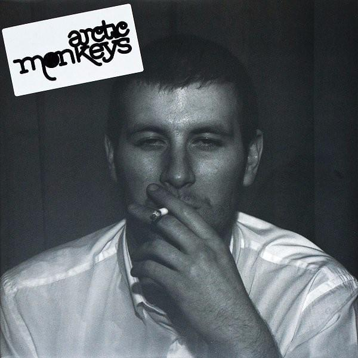
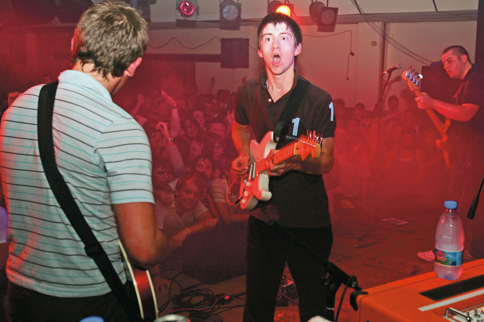

Whatever People Say I Am, That's What I'm Not
Here are my 5 favourite songs from the Arctic Monkeys debut album! Released in 2006, it became the fastest selling album in the UK's history. Based in the sounds of British nightlife in the working class city of Sheffield, it's a certified cult classic.
The View from the Afternoon

The albums opening track, it sets the tone for the album and effectively captures the rush of a night out.
"Anticipation has a habit to set you up,
For disappointment in evening entertainment but
tonight there'll be some love!"
Image Source: Genius Lyric - The Album Cover, 2006
I Bet You Look Good on the Dancefloor

Another song about a night out, this song ended up being the most successful on the album. The band performed it at the London 2012 Olympic opening ceremony, and NME ranked the song at No. 7 on thier "The 500 Greatest Songs of All Time".
"I wish you'd stop ignoring me,
Because you're sending me to despair,
Without a sound, yeah, you're calling me,
And I don't think it's very fair."
Image Source: The Olympics - The Arctic Monkeys @ London 2012, 2012
Fake Tales of San Francisco

This track is a critique of inauthenticity in the industry. It aged paticuarly poorly as the band became more "American" with it's most successful hits in 2013, which saw original fans become upset with the band.
Pictured above, this graffiti was found in Hunters Bar, Sheffield. "Alex" is the lead singer, Alex Turner.
"He talks of San Francisco, he's from Hunter's Bar,
I don't quite know the distance, but I'm sure that's far"
Image Source: @notemilycoates, X/Twitter - Hey Alex.... How's California?, May 12th, 2018
Dancing Shoes

Another song about a night out. Can you beleive it? This one's about wanting to introduce yourself at a club.
"Yeah, but it's oh so absurd,
For you to say the first word,
So you're waiting and waiting and"
Image Source: Dean Chalkey, NME - One of the Bands First Gigs, 2005
A Certain Romance
One of the best album enders of all time, this song is about the authors grips with British "lad" culture, and wanting to get away from it, although he never will. (Spoiler/See above, he did).
"Cause over there, there's broken bones,
There's only music, so that there's new ringtones"
Image Source: K.C. Alfred, San Diego Union-Tribune, A Recent Photo of Alex Turner, 2018